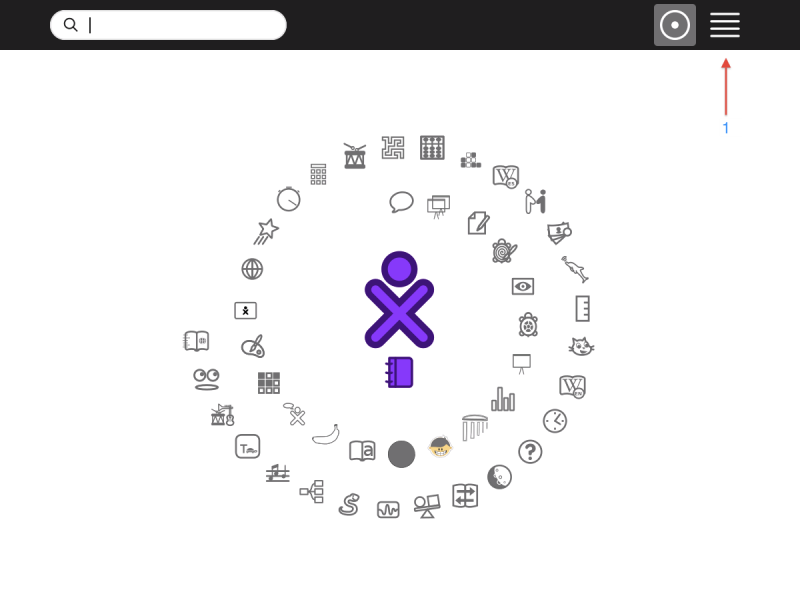

What is an Activity¶
Activities are the things you use to make projects in Sugar on your XO. Activities are found on your “Home” view in the circle around your “person” icon.

These activities have been selected from all those installed on your laptop. They are called “Favorites”. You can change this list at any time by clicking on the “List” view (1) in the upper right corner of your screen.
To start an activity, you can click its icon. This will open the last project you were working on. You can also see all your recent projects by hovering your pointer over the icon and look for the name of which you saved your project. In order to open a new session, hover your pointer on the icon and click “start new”.
There is one special activity called the “Journal” which appears under your “person” icon, if you have no other Activities open, and on the Frame, or you can press the magnifying glass key in the top row of the keyboard to immediately open the Journal and search. The Journal keeps track of everything you do on the XO. It also stores the files you create with your Activity. Some Activities need no instruction or explanation, such as Maze and Speak. There are other Activities that require some learning and exploration, such as Turtle Art, Etoys, and Scratch.
There are Activities which are games, such as Memorize and Implode. Some perform basic functions such as writing documents (Write), taking pictures or videos (Record), or browsing the Internet (Browse). Other Activities allow you to create complex images, games, animations and programs : Scratch, Etoys, TurtleArt. You can also make music with Tam Tam and use it in your animation, or story or Memorize game.
A set of Activities is pre-installed with the Sugar environment. More Activities can be found and added to your XO from the Sugar Activity Library, http://activities.sugarlabs.org. You can also add Activities from a USB drive (thumb drive).